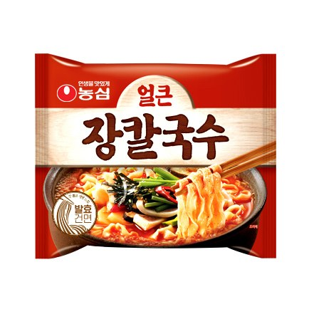

농심 얼큰 장칼국수
농심 얼큰 장칼국수 — 칼칼한 장칼국수 라면.
농심 얼큰 장칼국수는 된장소스 칼국수 맛을 매콤하게 낸 봉지라면입니다. 불닭·짜왕과 함께 마트 라면 코너에서 사 가기 좋은 한국 음식 기념품입니다.
스프·액상 소스는 지퍼백에 한 번 더 넣어 주세요. 이마트·홈플러스 특가가 편의점보다 저렴한 경우가 많습니다.
농심 얼큰 장칼국수는 된장소스 칼국수 맛을 매콤하게 낸 봉지라면입니다. 불닭·짜왕과 함께 마트 라면 코너에서 사 가기 좋은 한국 음식 기념품입니다.
스프·액상 소스는 지퍼백에 한 번 더 넣어 주세요. 이마트·홈플러스 특가가 편의점보다 저렴한 경우가 많습니다.
사는 팁
구매 팁 멀티팩으로 사고, 조리법은 봉지 뒷면을 확인하세요.